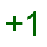
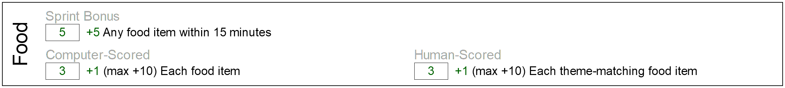
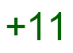
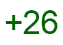

5 Training Recommendations
5.1 Training Badges
Coaches will train competitors by helping them acquire the necessary skills to excel at the Game Jam competition. Competitors who have mastered these skills will receive badges. These badges serve as visual, wearable representations of a competitor’s hard work.
Badge key:
 - Meta Badges - for skills related to excelling as a Game Jam competitor.
 - Avatar Badges - for skills related to creating avatars
- Avatar Badges - for skills related to creating avatars
 - Food Badges - for skills related to creating food items
- Food Badges - for skills related to creating food items
 - Non-Food Badges - for skills related to creating non-food items
- Non-Food Badges - for skills related to creating non-food items
 - NPC Badges - for skills related to creating NPCs
 - Recipe Badges - for skills related to creating recipes
5.1.1 Day 1 Badges
These are called "day 1" badges because we recommend that competitors earn these badges before earning any other badges. They help reenforce team values and help orient the competitors toward the challenges that face them.
 Core Values: Level 1 (1 minute.)
Core Values: Level 1 (1 minute.)
Can recite the first three ThoughtSTEM core values
It’s not about my code. It’s about what I can code.
It’s not about me. It’s about us.
[Hand motions?]
 Game Jam Specs: Level 1 (1 minute.)
Can recite the specs for the upcoming Game Jam.
Game Type: Survival Game
Time Limit: 40 minutes
- Categories:
Avatar: 20 points
Food Items: 25 points
Non-Food Items: 25 points
Non-Player Characters: 30 points
Crafting: 55 points
This badge should be re-earned any time the specs change. Or any time there’s a new upcoming jam. The specs do change from time to time. (And that in itself is a valuable lesson.)
 Meta Kata: Level 1 (1 minute.)
Meta Kata: Level 1 (1 minute.)
Can recite answer to: What is a Kata badge?
Calmly
Quickly
Accurately
 First Kata (5 minute)
First Kata (5 minute)
Within five minutes, the student can translate an English sentence of this type:
Make an avatar that looks like a red circle that is 80 pixels across.
To code of this type:
(survival-game-jam #:player (basic-player-entity (square 40 'solid 'red)))
Note: To award this badge, a student should be able to do the above in under 1 minute. But doing it once is too easy. The student should do this multiple times with different shapes: e.g. blue square, green star, etc.
<Kata Badges>
avatar: 5 minutes, 2.5 minutes Food: 5 minutes, 2.5 minutes Non-Food: 5 minutes, 2.5 minutes NPC: 5 minutes, 2.5 minutes Recipes: 5 minutes, 2.5 minutes
<Sprint Badges>
Under 5 minutes: avatar + Food Under 10 minutes: avatar + Food + Non-Food Under 15 minutes: avatar + Food + Non-Food + NPC Under 15 minutes: avatar + Food + Non-Food + NPC + Recipe
<x10 Badges>
Under 5 minutes: 10 different NPCs Under 5 minutes: 10 different Non-Food Items Under 5 minutes: 10 different Food Items Under 5 minutes: 10 different Recipes Under 10 minutes: 10 different Recipes in a tree
Note that these badges must be "refreshed". You don’t get to keep them if you’re not practicing...
5.2 Collaboration Badges
<Teaching badges>
* A badge for how you help someone else earn a badge.
For any badge above, if you have already earned it and you’ve earned the teaching badge, you can get a badge for helping someone earn a badge.
5.3 Competition Badges
<Practice Jam Badges>
Do a 1 hour game jam. Do a 1 hour game jam. Get __ points. Do a 1 hour game jam. Get __ points. Do a 1 hour game jam. Get __ points.
<Compete in a real game Jam>
1st Competition 2nd Competition 3rd Competition 4th Competition 5th Competition ...
TODO: Somewhere, say something about doing a coding phase and an art phase...